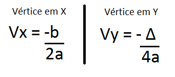

| INÍCIO | 1º TRIMESTRE | 2º TRIMESTRE | 3º TRIMESTRE |
|---|
A função quadrática recebe esse nome pois ela é elevada ao quadrado (^2), Sua lei é f(x)=ax^2 + bx +c. Exatamente igual a uma equação de 2º grau, que pode ser resolvido usando a fórmula de Bhaskara. Ela assemelha se muito ao “Sorvetão” da física, pois o gráfico de ambas é uma parábola.
Para determina o gráfico da função quadrática existem 4 passos:
1º - Verificar o sinal do coeficiente A, onde se A > 0 a concavidade é para cima, e se A < 0 a concavidade é para baixo.
2º - O segundo passo é descobrir as raízes, existem algumas formas mas a mais comum é utilizar a fórmula de Bhaskara. O x¹ e x² da bhaskara serão os pontos de corte da reta X.
3º - O terceiro passo consiste em descobrir o ponto na reta Y, onde pode ser descoberto zerando o X da função. Ou, há um jeito mais fácil, que é vendo qual o valor do coeficiente C da função.
4º - O último passo é descobrir o vértice. Para descobrir esse vértice há duas forma:
1º - Fazer uma média das raízes x¹ e x², descobrindo o ponto na reta X, e depois aplicar o resultado encontrado na função para descobri o ponto na reta Y.
2º - Ou, pode ser usado duas fórmulas para encontrar, que eu prefiro usar. Sendo elas:
Voltar